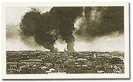

|
j
a v a s c r i p t |
December 24, 1941
More landings! Forty Japanese transports landed troops at Atimonan†, south of Manila on the eastern coast of Luzon. The fighting in Lingayen continues but it is already apparent we are outnumbered.

Fires from Japanese Bombing
1100: Japanese planes had a field day bombing the Port Area, starting several fires and wounding and killing several hundred. The raids troubled us; the fourth was the grandest yet. For almost an hour Maurice and I stood on the Santa Mesa Railroad overpass and watched incredulously as thirteen planes, circling unchallenged like vultures, took turns peeling off and diving on Nichols and Fort McKinley. After starting two huge fires they departed directly over our heads with great disdain. The girls wouldn’t go out this Christmas Eve, so, lights doused, Maurice and I drove to the Manila Hotel through the dark and deserted streets. A half moon taped the ghost-like scene in a silvery light. At the Luneta Meralco buses continued loading soldiers and supplies for the 150-mile trip to the front. It was a fascinating spectacle for not a sound except that of motors could be heard. Only 150-miles from the front, they should arrive well before the crack of dawn. The hotel’s Christmas Eve party was held in the air-conditioned Winter Garden instead of the ballroom. The style was there but not the spirit. The crowd was mostly American. We searched in vain for a smile amongst the huddles of gloom. Left early and tripped around the Boulevard, then home to close a hectic day of five alerts, no less than four raids, and several large fires. Or so we thought: at 0100 the sirens went back on and three huge explosions rocked the city. As if to celebrate the arrival of Christmas Day the Japanese dropped flares for the first time. † Lamon Bay |
|
|
|
|